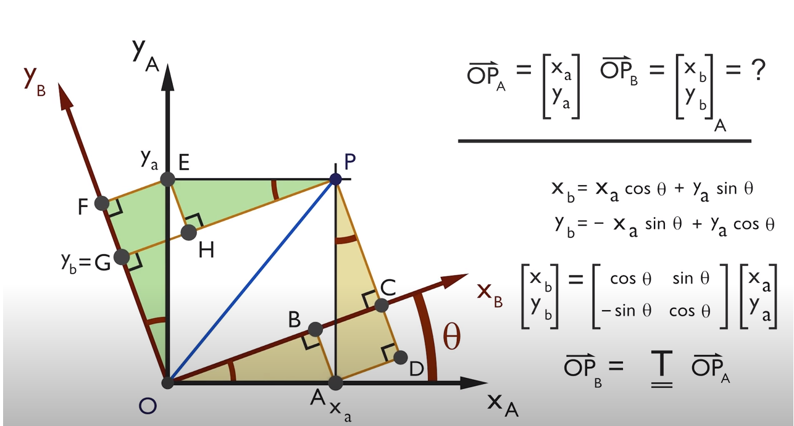

最近又碰到了坐标变换，发现已经忘了许多，在此在记录下。
常用的变换有: 平移,缩放,旋转。
平移直接加即可 \(\begin{bmatrix} x_b \\ y_b \\ z_b \end{bmatrix} = \begin{bmatrix} x_a \\ y_a \\ z_a \end{bmatrix} + \begin{bmatrix} \Delta x \\ \Delta y \\ \Delta z \end{bmatrix}\) 其中$\Delta x,\Delta y,\Delta z$为b坐标轴在a坐标轴上的偏移。
缩放直接乘就好 \(\begin{bmatrix} x_b \\ y_b \\ z_b \end{bmatrix} = \begin{bmatrix} s_x & 0 & 0 \\ 0 & s_y & 0 \\ 0 & 0 & s_z \end{bmatrix} \begin{bmatrix} x_a \\ y_a \\ z_a \end{bmatrix}\) 其中$ s_x,s_y,s_x$为b坐标轴在a坐标轴上的缩放倍数。
三维旋转可以分解为在三个不同的平面单独旋转:
在xy平面绕z轴逆时针旋转(heading或yaw)

此时:
\(\begin{aligned}
x_b = OC &= OB + BC \\
&= OB + AD \\
&= x_a * \cos\theta + y_a * \sin\theta
\end{aligned}\)
\(\begin{aligned} y_b = CP = OG &= OF - GF \\ &= OF - HE \\ &= y_a * \cos\theta - x_a * \sin\theta \end{aligned}\) 因此: \(\begin{bmatrix} x_b \\ y_b \end{bmatrix} = \begin{bmatrix} \cos\theta & \sin\theta \\ -\sin\theta & \cos\theta \\ \end{bmatrix} * \begin{bmatrix} x_a \\ y_a \end{bmatrix}\) 转成三维有: \(tr_{yaw} = \begin{bmatrix} \cos\theta & \sin\theta & 0 \\ -\sin\theta & \cos\theta & 0 \\ 0 & 0 & 1 \end{bmatrix}\)
因此旋转矩阵为: \(T = tr_{yaw} * tr_{pitch} * tr_{roll}\)